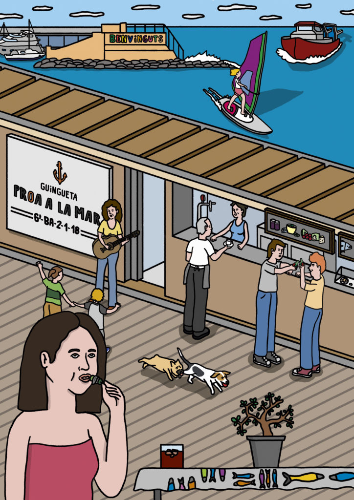

Hola, som la guingueta Proa a la Mar!
Una iniciativa d’emprenedoria comunitària que vol impulsar, potenciar i enfortir l’economia
local de la Barceloneta amb valors de l’economia social i solidària.
Apostem per la inserció laboral de persones aturades de la Barceloneta i defensem la
dignificació del sector de la restauració i els drets laborals dels treballadors i
treballadores.
Els nostres proveïdors, productors i productes són locals, promovem el consum conscient i
responsable, i els materials d’un sol ús que fem servir són biodegradables.
Volem recuperar i difondre la cultura marinera de la Barceloneta des de la gastronomia i la
tasca comunitària.
Saps? Consumint a la guingueta Proa a la Mar estàs apostant per la transformació social, la
intercooperació… I el més rellevant de tot, estàs posant les persones i el territori al
centre!
Què vols prendre? 😉